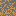
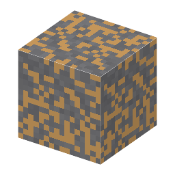

①子ども 黄褐色の粒が入った石。セリウムなどのレアアースの鉱石。
②学生 オーバーワールドの石の中にまれにある（高さ -16〜64）。つるはしで掘るとバストネス石。
③大人 (Ce,La)CO3F。炭酸塩の岩（カーボナタイト）の鉱床にできる。放射性のトリウムが少ないとされ、セリウムがいちばん多い。
④ガチ アメリカのマウンテンパス鉱山、中国の白雲鄂博（バヤンオボ）鉱山がこの鉱石の大きな鉱山。
（作り方のレシピは無い：拾う・掘る・ほかの方法）
（このアイテムを使うレシピは無い）